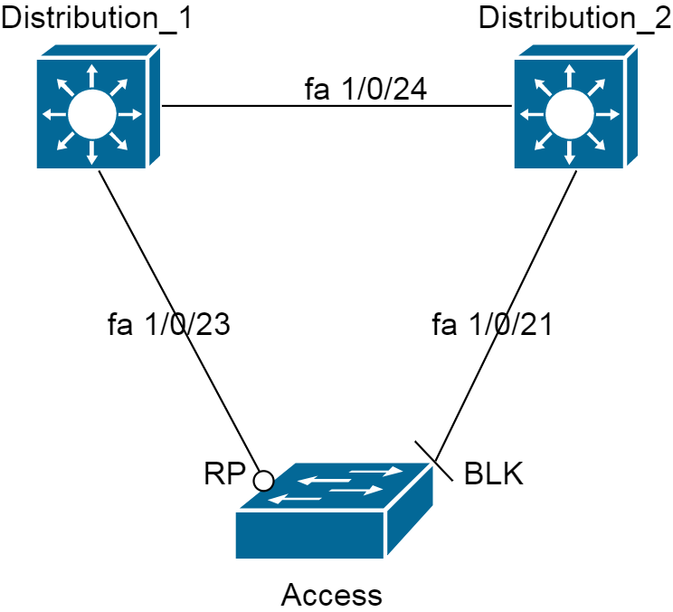

Configuring Spanning Tree PortFast, UplinkFast, and BackboneFast
Topology Changes
A topology change occurs when a switch either moves a port into the Forwarding state or moves a port from the Forwarding or Learning states into the Blocking state. In other words, a port on an active switch comes up or goes down.
The switch sends a TCN BPDU out its root port so that, ultimately, the root bridge receives news of the topology change. Notice that the TCN BPDU carries no data about the change but informs recipients only that a change has occurred. Also notice that the switch will not send TCN BPDUs if the port has been configured with PortFast enabled.
Direct Topology Changes
A direct topology change is one that can be detected on a switch interface. For example, if a trunk link suddenly goes down, the switch on each end of the link can immediately detect a link failure. The absence of that link changes the bridging topology, so other switches should be notified.
The total time that users lose connectivity, with the default STP timers, is about two times the forward delay period (15 seconds), or 30 seconds total.
Indirect Topology Changes
The link failure is in another segment of the network. As a result of the indirect link failure, the topology does not change immediately. The total time that users lose connectivity is roughly the time until the max age timer expired (20 seconds), plus the time until the next Configuration BPDU was received (2 seconds) plus the time that port spent in the Listening (15 seconds) and Learning (15 seconds) states. In other words, 52 seconds elapse if the default timer values are used.
Insignificant Topology Changes
For example, powering off the PC. No actual topology change occurred because none of the switches had to change port states to reach the root bridge.
PortFast
PortFast causes a switch or trunk port to enter the spanning tree forwarding state immediately, bypassing the listening and learning states.
You can use PortFast to connect a single end station or a switch port to a switch port. If you enable PortFast on a port that is connected to another Layer 2 device, such as a switch, you might create network loops.
PortFast Configuration Example
We can enable PortFast using one of these 2 methods:SW3(config)#spanning-tree portfast default %Warning: this command enables portfast by default on all interfaces. You should now disable portfast explicitly on switched ports leading to hubs, switches and bridges as they may create temporary bridging loops. SW3(config)# SW3(config)#interface range gigabitEthernet 1/0/1 - 2 SW3(config-if-range)#no spanning-tree portfast
SW3(config)#interface fastEthernet 1/0/19 SW3(config-if)#spanning-tree portfast %Warning: portfast should only be enabled on ports connected to a single host. Connecting hubs, concentrators, switches, bridges, etc... to this interface when portfast is enabled, can cause temporary bridging loops. Use with CAUTION %Portfast has been configured on FastEthernet1/0/19 but will only have effect when the interface is in a non-trunking mode.To verify:
SW3#show spanning-tree interface fastEthernet 1/0/19 portfast VLAN0001 enabled
SW3#show spanning-tree detail
VLAN0001 is executing the ieee compatible Spanning Tree protocol
Bridge Identifier has priority 32768, sysid 1, address 0022.be5a.0680
Configured hello time 2, max age 20, forward delay 15
We are the root of the spanning tree
Topology change flag not set, detected flag not set
Number of topology changes 0 last change occurred 00:01:01 ago
Times: hold 1, topology change 35, notification 2
hello 2, max age 20, forward delay 15
Timers: hello 0, topology change 0, notification 0, aging 300
Port 21 (FastEthernet1/0/19) of VLAN0001 is forwarding
Port path cost 19, Port priority 128, Port Identifier 128.21.
Designated root has priority 32769, address 0022.be5a.0680
Designated bridge has priority 32769, address 0022.be5a.0680
Designated port id is 128.21, designated path cost 0
Timers: message age 0, forward delay 0, hold 0
Number of transitions to forwarding state: 1
The port is in the portfast mode
Link type is point-to-point by default
BPDU: sent 31, received 0
UplinkFast
UplinkFast is used to recover from a direct change.
Note: UplinkFast is most useful in wiring-closet switches that have a limited number of active VLANs. This enhancement might not be useful for other types of applications and should not be enabled on backbone or distribution layer switches.
Here is an example of how UplinkFast works. If the Access to Distribution_1 link is disconnected, we want to bring the link Access to Distribution_2 up as quickly as possible
Without enabling UplinkFast I am going to disconnect Fa1/0/23 and see the debug. It will take 30 seconds for Fa1/0/21 to become up/up.Access#debug spanning-tree events Spanning Tree event debugging is on 00:26:30: %LINEPROTO-5-UPDOWN: Line protocol on Interface FastEthernet1/0/23, changed state to down 00:26:31: STP: VLAN0001 sent Topology Change Notice on Fa1/0/21 00:26:44: STP: VLAN0001 Fa1/0/21 -> learning 00:26:59: STP: VLAN0001 sent Topology Change Notice on Fa1/0/21 00:26:59: STP: VLAN0001 Fa1/0/21 -> forwardingNow this time I am going to put Fa1/0/23 cable back in and configure
spanning-tree uplinkfast on the Access switch:
Access(config)#spanning-tree uplinkfast 00:39:30: setting bridge id (which=1) prio 49153 prio cfg 49152 sysid 1 (on) id C001.0022.be5a.0680Now let us unplug Fa1/0/23 again and see the
debug spanning-tree events output
00:41:23: STP: VLAN0001 new root port Fa1/0/21, cost 3038 00:41:23: %SPANTREE_FAST-7-PORT_FWD_UPLINK: VLAN0001 FastEthernet1/0/21 moved to Forwarding (UplinkFast). 00:41:24: %LINEPROTO-5-UPDOWN: Line protocol on Interface FastEthernet1/0/23, changed state to down 00:41:25: STP: VLAN0001 sent Topology Change Notice on Fa1/0/21 00:41:25: %LINK-3-UPDOWN: Interface FastEthernet1/0/23, changed state to downLet us see Priority and Cost when UplinkFast is configured on the spanning-tree: Notice that priority changes from 32768 to 49152, and the interfaces’ cost sum up with 3000
Access#show spanning-tree
VLAN0001
Spanning tree enabled protocol ieee
Root ID Priority 32769
Address 001d.707b.4200
Cost 3019
Port 25 (FastEthernet1/0/23)
Hello Time 2 sec Max Age 20 sec Forward Delay 15 sec
Bridge ID Priority 49153 (priority 49152 sys-id-ext 1)
Address 0022.be5a.0680
Hello Time 2 sec Max Age 20 sec Forward Delay 15 sec
Aging Time 15
Uplinkfast enabled
Interface Role Sts Cost Prio.Nbr Type
---------------- ---- --- --------- -------- --------------------------------
Fa1/0/21 Altn BLK 3019 128.23 P2p
Fa1/0/23 Root FWD 3019 128.25 P2p
Verification
Access#show spanning-tree uplinkfast UplinkFast is enabled Station update rate set to 150 packets/sec. UplinkFast statistics ----------------------- Number of transitions via uplinkFast (all VLANs) : 2 Number of proxy multicast addresses transmitted (all VLANs) : 4 Name Interface List -------------------- ------------------------------------ VLAN0001 Fa1/0/23(fwd), Fa1/0/21
BackboneFast
Backbone Fast is used to recover from an indirect link failure and shorten the STP convergence time to 30 seconds by bypassing the Max Age timeout period.
A switch detects an indirect link failure when it receives inferior BPDUs from its designated bridge on either its root port or a blocked port. (Inferior BPDUs are sent from a designated bridge that has lost its connection to the root bridge, making it announce itself as the new root.)
Configuration
In the topology above I will disconnect the link between distribution switches. First, on all the switches we apply this command:
Access(config)#spanning-tree backbonefast Distribution_1(config)#spanning-tree backbonefast Distribution_2(config)#spanning-tree backbonefastBefore disconnecting port Fa1/0/24:
Access#show spanning-tree backbonefast BackboneFast is enabled BackboneFast statistics ----------------------- Number of transition via backboneFast (all VLANs) : 0 Number of inferior BPDUs received (all VLANs) : 0 Number of RLQ request PDUs received (all VLANs) : 0 Number of RLQ response PDUs received (all VLANs) : 0 Number of RLQ request PDUs sent (all VLANs) : 0 Number of RLQ response PDUs sent (all VLANs) : 0Assume we enabled
debug spanning-tree events on the Access switch, then I disconnect port Fa1/0/24
Access# 00:05:26: STP: VLAN0001 heard root 32769-0022.0dec.1200 on Fa1/0/21 00:05:26: STP: VLAN0001 Fa1/0/21 -> listening 00:05:27: STP: VLAN0001 Topology Change rcvd on Fa1/0/21 00:05:27: STP: VLAN0001 sent Topology Change Notice on Fa1/0/23 00:05:41: STP: VLAN0001 Fa1/0/21 -> learning 00:05:56: STP: VLAN0001 sent Topology Change Notice on Fa1/0/23 00:05:56: STP: VLAN0001 Fa1/0/21 -> forwardingCompare to the result of the
debug spanning-tree events on the Access switch when NO BackboneFast is configured. Note that disconnecting the link Fa1/0/24 is an indirect change to the Access switch:
Access# 00:14:23: STP: VLAN0001 heard root 32769-0022.0dec.1200 on Fa1/0/21 00:14:25: STP: VLAN0001 heard root 32769-0022.0dec.1200 on Fa1/0/21 00:14:27: STP: VLAN0001 heard root 32769-0022.0dec.1200 on Fa1/0/21 00:14:29: STP: VLAN0001 heard root 32769-0022.0dec.1200 on Fa1/0/21 00:14:31: STP: VLAN0001 heard root 32769-0022.0dec.1200 on Fa1/0/21 00:14:33: STP: VLAN0001 heard root 32769-0022.0dec.1200 on Fa1/0/21 00:14:35: STP: VLAN0001 heard root 32769-0022.0dec.1200 on Fa1/0/21 00:14:37: STP: VLAN0001 heard root 32769-0022.0dec.1200 on Fa1/0/21 00:14:39: STP: VLAN0001 heard root 32769-0022.0dec.1200 on Fa1/0/21 00:14:41: STP: VLAN0001 heard root 32769-0022.0dec.1200 on Fa1/0/21 00:14:41: STP: VLAN0001 Fa1/0/21 -> listening 00:14:43: STP: VLAN0001 Topology Change rcvd on Fa1/0/21 00:14:43: STP: VLAN0001 sent Topology Change Notice on Fa1/0/23 00:14:57: STP: VLAN0001 Fa1/0/21 -> learning 00:15:12: STP: VLAN0001 sent Topology Change Notice on Fa1/0/23 00:15:12: STP: VLAN0001 Fa1/0/21 -> forwardingVerification:
Access#show spanning-tree backbonefast BackboneFast is enabled BackboneFast statistics ----------------------- Number of transition via backboneFast (all VLANs) : 1 Number of inferior BPDUs received (all VLANs) : 1 Number of RLQ request PDUs received (all VLANs) : 0 Number of RLQ response PDUs received (all VLANs) : 1 Number of RLQ request PDUs sent (all VLANs) : 1 Number of RLQ response PDUs sent (all VLANs) : 0
Distribution_1#show spanning-tree backbonefast BackboneFast is enabled BackboneFast statistics ----------------------- Number of transition via backboneFast (all VLANs) : 0 Number of inferior BPDUs received (all VLANs) : 0 Number of RLQ request PDUs received (all VLANs) : 1 Number of RLQ response PDUs received (all VLANs) : 0 Number of RLQ request PDUs sent (all VLANs) : 0 Number of RLQ response PDUs sent (all VLANs) : 1